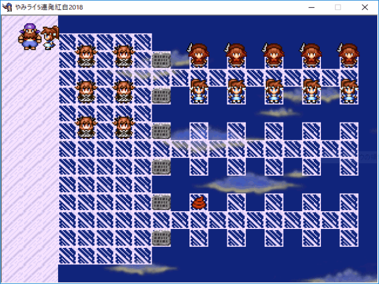

 |
|
| 作者：メール欄（メールラン） | |
| ツクール：steam2003 | |
| ジャンル：ｋｓｇ集(R-18含む) | |
| 配信/投稿：だめ | |
| keyword：うんち・エロギャグ | |
| 作者コメント： １０連発シリーズで過去最高のボリューム！？ なななんと！現時点で17のｋｓｇが含まれる！！！ 時間がある限り限界まで作るから数は20を超えるかも！？ 身の毛もよだつｋｓｇの山だよおおおおおおおおおおおお！！！ うおおおおおおおおおおおおおおおおおおおおおお！！！ 一応R-18要素含みます | |
| 管理人コメント： やみっちの髪の毛は茶色、あばりも茶色。ライチは神聖魔法が使え、リナックスも神聖魔法が使える。 つまりSSの並びは実質やみライ5連発。 |
|
| 未提出(0.0MB) / 感想掲示板 | |
| 前の作品 / 次の作品 / TOPへ戻る | |